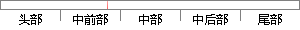

第五章 系统详细设计
片段位置图

相似结果|
相似片段 1：其模块流程如图5．1所示。图5．1系统登录流程图53辽宁科技大学工程硕士论文 第五章鞍钢汽逗公司物资管理信息系统的详细设计与实现图5．2系统登陆界面图5．3添加用户界面辽宁科技大学工程硕士论文
相似片段 2：....................................................334.4本章小结........................................................33第五章 系统的详细设计与实现
相似片段 3：??????????????????????334．3．4数据表结构设计???????????????????344．4本章小结?????????????????????????．38第五章系统的详细设计
相似片段 4：????????????????????????．344．5系统管理详细设计????????????????????????384．6本章小结????????????。???????????????．．42第五章系统实现
相似片段 5：????????????????????．．444．5本章小结??????????????????????????????46第五章详细设计与实现???????????????????????475．1系统模块详细设计
相似片段 6：??????????????????????????。44第五章系统详细设计与实现??????????????????．．455．1Web层功能详细设计?????????。????????????．455．1．1面向用户的系统
相似片段 7：。IFesttype_idTesttypenamedescriptin第五章系统详细设计与实现第五章系统的详细设计与实现详细设计的目的是明确系统结构图中每一个模块的业务品种、功能范围，其主要任务是对系统的总体设计方案做进一步完善和细化m，。
相似片段 8：的概要设计，并且完成了整个系统的数据库设计。第五章 详细设计实现35第五章 详细设计与实现5.1 概述本章根据前述的功能要求和模块结构，详细给出数据收集系统和统一管理系统的详细设计和实现。每个系统的详细
相似片段 9：??????????????????????。334．3系统各功能模块详细设计????????????????????334．3．1科技查新服务模块详细设计???????????．．334．3．2文献咨询服务模块详细设计
相似片段 10：?????????????????????．204．2系统总体功能模块结构设计???????????????????2l4．3系统详细设计?????????????????．4．3．1学生管理模块详细设计
|
※ 片段修改建议 ※
近似词参考：- 系统：体系
- 详细：具体 细致
- 设计：计划
系统自动生成语句： 第五章 体系具体计划
注：本片段修改建议为系统自动生成，仅供参考。